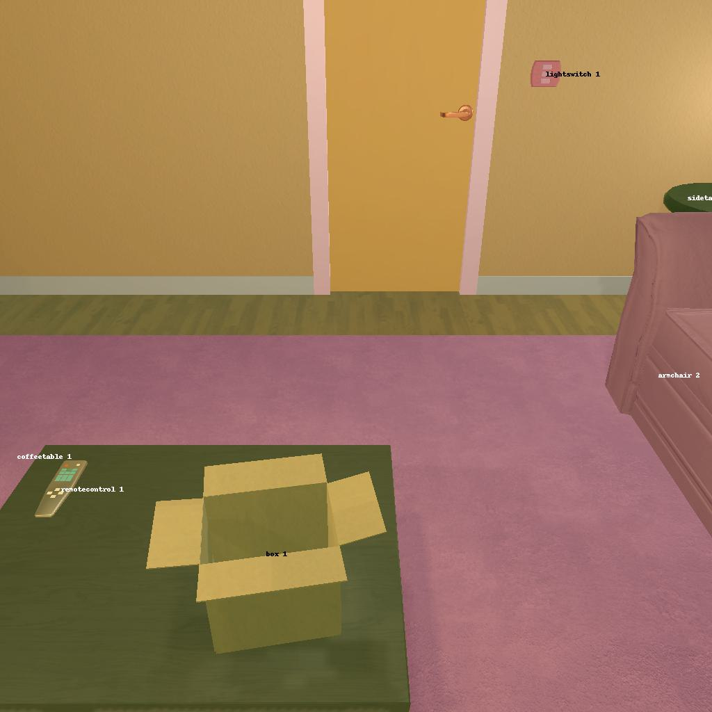

---------------------------------------------------------task: 7---------------------------------------------------------
--------------------------------------------------------------------------------------------------------------------------------------------------------------------
--------------------------------------------------------------------------------------------------------------------------------------------------------------------
Step:--------------------------------------------------------------------------8-------------------------------------------------------------------------------
----------------------------------------
VLM Prompt:
Image1:
**Instruction**
1. Analyze the provided image to identify all visible household objects, focusing on those relevant to the task description "put a creditcard in coffeetable."
2. Use the analysis of the image and the task hint "The agent must find an object of the desired type, pick it up, find the correct location to place it, and put it down there." to answer the question: what is the most reasonable action in the choices for the task description "put a creditcard in coffeetable"?
4. Decide and write the answer using the template: The answer is: (i): , where i is the real number. If there is no desired object in the image, search every place based on **Initial Observation** to find the object. And if no one is exactly correct, choose a similar answer.
**Initial Observation**
You are in the middle of a room. Looking quickly around you, you can see armchair (1-2), dresser (1), garbagecan (1), cabinet (1-4), drawer (1-4), coffeetable (1), sidetable (1), sofa (1)
**Answer Choices**
(1): go to armchair 1
(2): go to armchair 2
(3): go to dresser 1
(4): go to garbagecan 1
(5): go to cabinet 1
(6): go to drawer 2
(7): go to cabinet 2
(8): go to drawer 3
(9): go to cabinet 3
(10): go to drawer 4
(11): go to cabinet 4
(12): go to sidetable 1
(13): go to sofa 1
(14): take box 1 from coffeetable 1
(15): take remotecontrol 1 from coffeetable 1
(16): take lightswitch 1 from coffeetable 1
(17): examine coffeetable 1
**Answer**
Let's think step by step by following the instructions.
----------------------------------------
----------------------------------------
Original Response:
The task is to put a credit card in the coffee table. In the image, we can see a coffee table with a box and a remote control on it, but there is no credit card visible. Therefore, we need to search for the credit card. Since the credit card is likely to be in a drawer, on a side table, or in a cabinet, we should check these places first.
Looking at the options provided, going to a drawer or a cabinet makes the most sense as these are common places to find a credit card. The options to take the box or the remote control from the coffee table are not relevant to the task. Examining the coffee table could be useful only if we had reason to believe the credit card was there, which we do not based on the image. There is also no action related to searching the side table, so we can exclude that option.
Based on the initial observation, we should check the drawers and cabinets first. There are multiple options for going to a drawer or a cabinet, so we should choose the one that seems most likely to contain a credit card. Since there is no specific information given about where the credit card might be, any of the drawers or cabinets could potentially contain it. However, people often keep important items like credit cards in the first drawer or cabinet they have for easier access.
The answer is: (5): go to cabinet 1.
----------------------------------------
----------------------------------------
>>> Refine Original VLM Response and Get Pure Action: go to cabinet 1
----------------------------------------
-----------------------------------------------------------------
Running time: 12.048989295959473 seconds
Total Money: 2.1441500000000007
-----------------------------------------------------------------
-----------------------------------------------------------------
Text Observation:You arrive at loc 4. The cabinet 1 is closed.
-----------------------------------------------------------------
UNSUCCEED